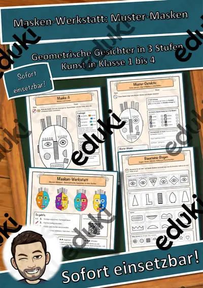

Muster entdecken – Streifen, Punkte, Flecken – Lesespurgeschichte mit Rätselaufgaben (Klasse 1)
Muster entdecken – Streifen, Punkte, Flecken – Lesespurgeschichte Kunst (Klasse 1/2)Begib dich mit deiner Klasse auf eine spannende Lesespur zu den Mustern der Natur! Luk und Enno machen eine Muster-Suche im Tierpark: Am Parktor entdecken sie, was ein Muster ist, auf der Zebrawiese Streifen, im Giraffenhaus Flecken, am Schildkrötenteich Kästchen, im Schmetterlingshaus spiegelgleiche Flügel und im Pfauengarten Reihen aus schimmernden Federaugen. In der Malhütte malen sie zum Schluss ihr eigenes Muster. Der Marienkäfer Punkti ist immer dabei. Am Ende jedes Abschnitts verrät ein Hinweis den nächsten Ort auf dem Plan – nur wer richtig liest, findet den Weg und sammelt alle geheimen Buchstaben zum Lösungswort.
Die perfekte Lesespur für den KUNSTUNTERRICHT der 1. und 2. Klasse: Sie verbindet motivierendes Lesen mit dem genauen Hinschauen – und schult zugleich das genaue Arbeiten. Ideal als Einstieg vor eigenen Musterbildern. Das Material ist SOFORT EINSETZBAR und in DREI DIFFERENZIERUNGSSTUFEN (leicht ★ / mittel ★★ / schwer ★★★) angelegt, mit sehr kurzen Sätzen.WICHTIG: Das komplette Material ist sowohl in FARBE als auch in SCHWARZ-WEISS enthalten – ideal zum Sparen von Druckkosten.DAS IST ENTHALTEN
- Lesespurgeschichte in 3 Niveaus (leicht, mittel, schwer)
- farbiger Plan als Suchkarte
- Hörverstehen mit QR-Code zur MP3 (selbstständiges Hören mit Kopfhörern)
- vier Aufträge auf dem Weg: ein Verbinde-Rätsel, ein Quiz, eine Rechenaufgabe im Zahlenraum bis 20 und ein Steckbrief
- Rätselseite (Wörter-Suchsel + Mal-Aufgaben)
- Ausmalbild zum Thema (Tiere mit Mustern)
- ausführliches Lösungsblatt für die Lehrkraft
- alles zusätzlich als komplette Schwarz-Weiß-VarianteSO GEHT DIE LESESPURDie Kinder lesen ab START, finden im Text den nächsten Ort, suchen ihn auf dem Plan und lesen bei dieser Station weiter. An jeder richtigen Station gibt es einen Buchstaben. Eingebaute Sackgassen (Imbiss, Spielplatz, Parkplatz, Toiletten) sind keine Stationen und dienen der Selbstkontrolle. Am Ende werden die gesammelten Buchstaben umgestellt und ergeben ein geheimes Lösungswort. (Die Lösungen sind selbstverständlich nur im Lösungsblatt für die Lehrkraft enthalten.)INHALTLICHER SCHWERPUNKTDie Kinder erkennen Muster als Wiederholung von Farben und Formen. Sie entdecken Streifen, Flecken, Kästchen und Punkte bei Tieren, nehmen spiegelgleiche Formen am Schmetterling wahr und gestalten zum Schluss ein eigenes Muster, in dem sich Formen und Farben abwechseln.ABGEDECKTER LEHRPLAN (Klasse 1/2, Kunst)
- Kunst (LehrplanPLUS Bayern) – Grundschule 1/2 „Muster und Ornamente“: Muster als Wiederholung von Formen und Farben erkennen, Muster in der Natur entdecken, spiegelgleiche Formen wahrnehmen und ein eigenes Muster gestalten.
- Deutsch – Lesen mit Texten und Medien umgehen: sinnentnehmend lesen, einem Text gezielt Informationen entnehmen; Zuhören: einem Hörtext konzentriert folgen (Hörverstehen mit MP3).
- Mathematik – Rechnen im Zahlenraum bis 20; Muster und Strukturen.
- Fächerübergreifend / Kompetenzen: HSU (Tiere), genaues Beobachten, genaues Lesen und Prüfen, kreatives Gestalten (Ausmalbild).
Geeignet für Freiarbeit, Stationenlernen, Vertretungsstunden, Wochenplan, Projekttage und Homeschooling. Klassenstufe 1/2.
Ähnliche Materialien

Marienkäfer Lückentext mit Wortspeicher Hörverstehen und Suchsel

Masken-Werkstatt Muster-Masken – Geometrische Gesichter in 3 Stufen (Kunst, Klasse 1–4, Vorlagen + Bausteine)

DaZ & Leseförderung: Partner-Diktat-Streifen – 6 Wortfelder, 3 Niveaus, Hör-Diktat per QR-Code

Weben am Webrahmen – Kette, Schuss und Muster – Lesespurgeschichte mit Rätselaufgaben (Klasse 3)

Die Lichterketten-Werkstatt – Rollenspiel Muster und Zahlenfolgen, 3-fach differenziert (Klasse 1)

Die Fensterbild-Werkstatt – Rollenspiel Formen, Muster und Symmetrie, 3-fach differenziert (Klasse 1)

Löwe Lückentext mit Wortspeicher Hörverstehen und Suchsel